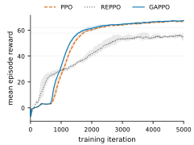
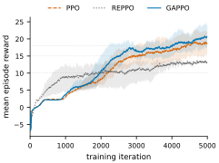
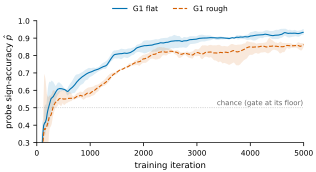
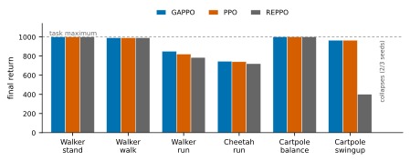

Clipped policy update
The PPO score-gradient anchors each policy step, while verified pathwise directions provide complementary local improvement information.
Verify critic gradients before letting them refine PPO.
Paper
On-policy methods such as PPO discard first-order pathwise information carried by action-conditioned critics, whereas naive use of this information can introduce bias and instability. We identify the obstacle as phantom gradients: confidently wrong critic derivatives that are dense, invisible to value-error metrics, and concentrated in difficult contact-rich regimes. We introduce Gradient-Aware Pathwise Policy Optimization (GAPPO), which retains the PPO learner while adding an exact zero-mean control variate and a deliberately biased, trust-gated refinement of the policy mean along the critic gradient. The refinement is projected not to oppose the unbiased PPO signal and is capped per state. Trust is calibrated, rather than tuned, using a small, budgeted set of common-random-number branch probes that compare critical derivatives with counterfactual outcomes and estimate sign accuracy. We prove that pathwise directions are unidentifiable from value fitting alone, motivating counterfactual measurement; establish the control variate’s zero-mean property and the refinement’s displacement bound; and derive a confidence-certified gate whose refinement is non-degrading relative to PPO with high probability, up to stated approximation errors. Under matched interaction budgets, GAPPO improves sample efficiency on Unitree G1 velocity tracking, with larger step-to-threshold speedups on harder terrain. All GAPPO seeds reach every evaluated threshold, whereas one PPO seed misses the hardest target; deterministic evaluations show comparable final gait quality. Across six DMC-style tasks, GAPPO numerically matches or exceeds PPO, with the clearest gain on walker-run. By contrast, naive score/pathwise mixing degrades severely, while an entropy-controlled pathwise baseline exhibits collapse and fall-rate pathologies. GAPPO thus converts verified pathwise information into sample-efficiency gains while retaining PPO’s optimization and exploration backbone.
Method
GAPPO keeps the standard PPO update, measures whether critic directions improve counterfactual outcomes, and refines the policy only where those directions are verified.
The PPO score-gradient anchors each policy step, while verified pathwise directions provide complementary local improvement information.
Paired branches from the same simulator state test the critic’s proposed action direction under shared randomness.
Measured sign accuracy gates a policy-mean update that is PPO-aligned, projected, and capped per state.
Main empirical results
Under matched interaction budgets on Unitree G1 velocity tracking, GAPPO reaches intermediate performance levels earlier while retaining comparable deterministic gait quality.


Curves show three seeds (mean with min–max band), smoothed over 20 iterations. Speedups use identical-seed pairs; probe steps are counted against GAPPO’s interaction budget.
G1 experiments
Matched qualitative comparisons on flat and rough terrain, plus mid-training behavior and additional GAPPO demonstrations.
Thirty-second deterministic rollouts for all three evaluated methods.
The corresponding policies evaluated across the rough-terrain field.
Matched rough-terrain behavior at iteration 2500.
Full-length qualitative examples on both terrain families.
Broader evidence


Reference
@article{anonymous2026gappo,
title = {Trust What You Can Verify: Gradient-Aware Pathwise Policy Optimization},
author = {Anonymous Authors},
journal = {Transactions on Machine Learning Research},
year = {2026}
}This anonymous citation will be replaced when publication metadata is available.